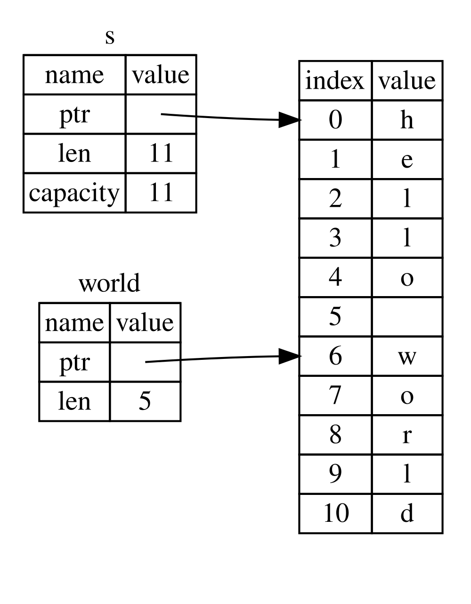

نوع Slice
Slices به شما اجازه میدهند که به یک دنبالهی متوالی از عناصر در یک مجموعه ارجاع دهید. اسلایس نوعی ارجاع است، بنابراین مالکیت ندارد.
یک مسئلهی کوچک برنامهنویسی داریم: تابعی بنویسید که یک رشته شامل کلمات جداشده با فاصله دریافت کند و اولین کلمهای را که در آن رشته پیدا میکند بازگرداند. اگر تابع فاصلهای در رشته نیابد، کل رشته یک کلمه محسوب میشود و باید کل رشته بازگردانده شود.
نکته: برای معرفی اسلایسهای رشتهای در این بخش، فرض بر این است که تنها با ASCII سروکار داریم؛ بحث جامعتر دربارهی مدیریت UTF-8 در بخش «ذخیره متن کدگذاریشده UTF-8 با رشتهها» در فصل ۸ ارائه شده است.
بیایید بررسی کنیم چگونه امضای این تابع را بدون استفاده از اسلایسها مینویسیم تا مشکلهایی که اسلایسها حل میکنند را درک کنیم:
fn first_word(s: &String) -> ?تابع first_word یک پارامتر از نوع &String دریافت میکند.
ما نیازی به مالکیت نداریم، پس این کار درست است.
(در Rust ایدئومیک، توابع معمولاً مالکیت آرگومانهای
خود را نمیگیرند مگر اینکه واقعاً لازم باشد، و دلایل
این موضوع با پیش رفتن توضیح داده خواهد شد.) اما
چه چیزی باید بازگردانیم؟ در واقع راهی برای اشاره به
بخشی از رشته نداریم. با این حال، میتوانیم اندیس
پایان کلمه را که با یک فاصله مشخص میشود، بازگردانیم.
بیایید این روش را امتحان کنیم، همانطور که در فهرست 4-7
نشان داده شده است.
fn first_word(s: &String) -> usize {
let bytes = s.as_bytes();
for (i, &item) in bytes.iter().enumerate() {
if item == b' ' {
return i;
}
}
s.len()
}
fn main() {}چون باید String را عنصر به عنصر پیمایش کنیم و بررسی کنیم که آیا یک مقدار فاصله است یا نه، String خود را با استفاده از متد as_bytes به آرایهای از بایتها تبدیل میکنیم.
fn first_word(s: &String) -> usize {
let bytes = s.as_bytes();
for (i, &item) in bytes.iter().enumerate() {
if item == b' ' {
return i;
}
}
s.len()
}
fn main() {}در مرحله بعد، یک iterator روی آرایه بایتها با استفاده از متد iter ایجاد میکنیم:
fn first_word(s: &String) -> usize {
let bytes = s.as_bytes();
for (i, &item) in bytes.iter().enumerate() {
if item == b' ' {
return i;
}
}
s.len()
}
fn main() {}ما در فصل 13 بیشتر درباره iterators بحث خواهیم کرد. فعلاً بدانید که iter یک متد است که هر عنصر در یک مجموعه را برمیگرداند و enumerate نتیجه iter را میپیچد و هر عنصر را به عنوان بخشی از یک tuple برمیگرداند. اولین عنصر tuple برگردانده شده از enumerate شاخص است و دومین عنصر ارجاع به عنصر است. این کار کمی راحتتر از محاسبه شاخص به صورت دستی است.
زیرا متد enumerate یک tuple برمیگرداند، میتوانیم از الگوها برای جدا کردن این tuple استفاده کنیم. ما در فصل 6 بیشتر درباره الگوها صحبت خواهیم کرد. در حلقه for، الگویی مشخص میکنیم که i برای شاخص در tuple و &item برای بایت منفرد در tuple باشد. زیرا ما یک ارجاع به عنصر از .iter().enumerate() دریافت میکنیم، از & در الگو استفاده میکنیم.
داخل حلقه for، به دنبال بایتی که نماینده فاصله باشد میگردیم با استفاده از نحوه نوشتن بایت به صورت literale. اگر یک فاصله پیدا کردیم، موقعیت را برمیگردانیم. در غیر این صورت، طول رشته را با استفاده از s.len() برمیگردانیم.
fn first_word(s: &String) -> usize {
let bytes = s.as_bytes();
for (i, &item) in bytes.iter().enumerate() {
if item == b' ' {
return i;
}
}
s.len()
}
fn main() {}اکنون راهی برای یافتن شاخص انتهای اولین کلمه در رشته داریم، اما مشکلی وجود دارد. ما یک usize به تنهایی برمیگردانیم، اما این تنها یک عدد معنادار در زمینه &String است. به عبارت دیگر، زیرا این مقدار از String جدا است، هیچ تضمینی وجود ندارد که در آینده همچنان معتبر باشد. برنامهای که در لیستینگ 4-8 استفاده میشود و از تابع first_word از لیستینگ 4-7 استفاده میکند را در نظر بگیرید.
fn first_word(s: &String) -> usize {
let bytes = s.as_bytes();
for (i, &item) in bytes.iter().enumerate() {
if item == b' ' {
return i;
}
}
s.len()
}
fn main() {
let mut s = String::from("hello world");
let word = first_word(&s); // word will get the value 5
s.clear(); // this empties the String, making it equal to ""
// word still has the value 5 here, but s no longer has any content that we
// could meaningfully use with the value 5, so word is now totally invalid!
}این برنامه بدون هیچ خطایی کامپایل میشود و حتی اگر word را بعد از فراخوانی s.clear() استفاده کنیم، همچنان درست کار خواهد کرد. زیرا word اصلاً به حالت s متصل نیست، word همچنان مقدار 5 را دارد. ما میتوانیم از مقدار 5 همراه با متغیر s استفاده کنیم تا تلاش کنیم اولین کلمه را استخراج کنیم، اما این یک باگ خواهد بود زیرا محتوای s از زمانی که 5 را در word ذخیره کردیم، تغییر کرده است.
نگران هماهنگ نگه داشتن شاخص در word با دادههای موجود در s بودن، خستهکننده و مستعد خطاست! مدیریت این شاخصها حتی شکنندهتر میشود اگر بخواهیم یک تابع second_word بنویسیم. امضای آن باید به این صورت باشد:
fn second_word(s: &String) -> (usize, usize) {حالا ما یک شاخص شروع و یک شاخص پایان را دنبال میکنیم و مقادیر بیشتری داریم که از دادهها در یک وضعیت خاص محاسبه شدهاند اما اصلاً به آن وضعیت مرتبط نیستند. ما سه متغیر نامرتبط داریم که باید همگام نگه داشته شوند.
خوشبختانه، Rust یک راهحل برای این مشکل دارد: برشهای رشتهای.
برشهای رشتهای
string slice یک ارجاع به دنبالهای متوالی از عناصر یک String است و به این صورت نمایش داده میشود:
fn main() {
let s = String::from("hello world");
let hello = &s[0..5];
let world = &s[6..11];
}hello بهجای ارجاع به کل String، ارجاعی به بخشی از String است که با قطعهٔ اضافی [0..5] مشخص شده است. ما sliceها را با استفاده از یک بازه داخل کروشه و با مشخصکردن [starting_index..ending_index] میسازیم، که در آن starting_index اولین موقعیت در slice و ending_index یکی بیشتر از آخرین موقعیت در slice است. در داخل، ساختار دادهای slice موقعیت شروع و طول slice را ذخیره میکند، که برابر است با ending_index منهای starting_index. بنابراین در مورد let world = &s[6..11];، مقدار world یک slice خواهد بود که شامل یک اشارهگر به بایتِ شاخص ۶ از s و با طول 5 است.
شکل 4-7 این موضوع را در یک نمودار نشان میدهد.

شکل 4-7: برش رشتهای اشاره به بخشی از یک String
با استفاده از نحوی محدوده .. در Rust، اگر میخواهید از شاخص 0 شروع کنید، میتوانید مقدار قبل از دو نقطه را حذف کنید. به عبارت دیگر، این دو معادل هستند:
let s = String::from("hello");
let slice = &s[0..2];
let slice = &s[..2];به همین ترتیب، اگر برش شما شامل آخرین بایت String باشد، میتوانید عدد پایانی را حذف کنید. این به این معناست که این دو معادل هستند:
let s = String::from("hello");
let len = s.len();
let slice = &s[3..len];
let slice = &s[3..];شما همچنین میتوانید هر دو مقدار را حذف کنید تا یک برش از کل رشته بگیرید. بنابراین این دو معادل هستند:
let s = String::from("hello");
let len = s.len();
let slice = &s[0..len];
let slice = &s[..];توجه: اندیسهای بازهی slice برای
Stringباید در مرزهای معتبر کاراکترهای UTF-8 قرار داشته باشند. اگر سعی کنید یک slice از رشته را در میانهی یک کاراکتر چندبایتی ایجاد کنید، برنامهی شما با خطا متوقف خواهد شد.
با در نظر گرفتن این اطلاعات، بیایید first_word را بازنویسی کنیم تا یک برش برگرداند. نوعی که نشاندهنده “برش رشتهای” است به صورت &str نوشته میشود:
fn first_word(s: &String) -> &str {
let bytes = s.as_bytes();
for (i, &item) in bytes.iter().enumerate() {
if item == b' ' {
return &s[0..i];
}
}
&s[..]
}
fn main() {}ما شاخص پایان کلمه را به همان روشی که در لیستینگ 4-7 انجام دادیم، پیدا میکنیم، یعنی با جستجوی اولین فضای خالی. وقتی یک فضای خالی پیدا میکنیم، یک برش رشتهای با استفاده از شروع رشته و شاخص فضای خالی بهعنوان شاخصهای شروع و پایان برمیگردانیم.
اکنون وقتی first_word را فراخوانی میکنیم، یک مقدار واحد دریافت میکنیم که به دادههای پایه متصل است. این مقدار شامل یک ارجاع به نقطه شروع برش و تعداد عناصر موجود در برش است.
بازگرداندن یک برش برای یک تابع second_word نیز کار میکند:
fn second_word(s: &String) -> &str {اکنون یک API ساده داریم که بسیار سختتر است اشتباه شود زیرا کامپایلر اطمینان حاصل میکند که ارجاعها به داخل String معتبر باقی میمانند. به یاد دارید خطای منطقی برنامه در لیستینگ 4-8، وقتی شاخص انتهای اولین کلمه را به دست آوردیم اما سپس رشته را پاک کردیم، بنابراین شاخص ما نامعتبر شد؟ آن کد منطقی نادرست بود اما هیچ خطای فوری نشان نمیداد. مشکلات بعداً وقتی تلاش میکردیم از شاخص اولین کلمه با یک رشته خالی استفاده کنیم، ظاهر میشد. برشها این خطا را غیرممکن میکنند و به ما اطلاع میدهند که مشکلی در کد ما وجود دارد خیلی زودتر. استفاده از نسخه برش first_word یک خطای زمان کامپایل ایجاد میکند:
fn first_word(s: &String) -> &str {
let bytes = s.as_bytes();
for (i, &item) in bytes.iter().enumerate() {
if item == b' ' {
return &s[0..i];
}
}
&s[..]
}
fn main() {
let mut s = String::from("hello world");
let word = first_word(&s);
s.clear(); // error!
println!("the first word is: {word}");
}این هم خطای کامپایلر:
$ cargo run
Compiling ownership v0.1.0 (file:///projects/ownership)
error[E0502]: cannot borrow `s` as mutable because it is also borrowed as immutable
--> src/main.rs:18:5
|
16 | let word = first_word(&s);
| -- immutable borrow occurs here
17 |
18 | s.clear(); // error!
| ^^^^^^^^^ mutable borrow occurs here
19 |
20 | println!("the first word is: {word}");
| ---- immutable borrow later used here
For more information about this error, try `rustc --explain E0502`.
error: could not compile `ownership` (bin "ownership") due to 1 previous error
به یاد بیاورید از قوانین وام گرفتن که اگر ما یک ارجاع غیرقابل تغییر به چیزی داشته باشیم، نمیتوانیم یک ارجاع قابل تغییر نیز بگیریم. از آنجایی که clear نیاز دارد که String را کوتاه کند، نیاز دارد یک ارجاع قابل تغییر بگیرد. println! بعد از فراخوانی به clear از ارجاع در word استفاده میکند، بنابراین ارجاع غیرقابل تغییر باید هنوز در آن نقطه فعال باشد. Rust ارجاع قابل تغییر در clear و ارجاع غیرقابل تغییر در word را از همزمان وجود داشتن ممنوع میکند و کامپایل شکست میخورد. نه تنها Rust API ما را آسانتر کرده، بلکه یک دسته کامل از خطاها را در زمان کامپایل حذف کرده است!
رشتههای متنی به عنوان برش
به یاد بیاورید که ما درباره ذخیره رشتههای متنی در داخل باینری صحبت کردیم. اکنون که درباره برشها میدانیم، میتوانیم رشتههای متنی را به درستی درک کنیم:
let s = "Hello, world!";نوع s در اینجا &str است: این یک برش است که به یک نقطه خاص از باینری اشاره میکند. این همچنین دلیل غیرقابل تغییر بودن رشتههای متنی است؛ &str یک ارجاع غیرقابل تغییر است.
برشهای رشتهای به عنوان پارامترها
دانستن اینکه میتوانید برشهایی از رشتههای متنی و مقادیر String بگیرید ما را به یک بهبود دیگر در first_word میرساند، و آن امضای آن است:
fn first_word(s: &String) -> &str {یک برنامهنویس باتجربهتر Rust امضای نشان داده شده در لیستینگ 4-9 را مینویسد زیرا این اجازه را میدهد که از همان تابع برای مقادیر &String و &str استفاده کنیم.
fn first_word(s: &str) -> &str {
let bytes = s.as_bytes();
for (i, &item) in bytes.iter().enumerate() {
if item == b' ' {
return &s[0..i];
}
}
&s[..]
}
fn main() {
let my_string = String::from("hello world");
// `first_word` works on slices of `String`s, whether partial or whole.
let word = first_word(&my_string[0..6]);
let word = first_word(&my_string[..]);
// `first_word` also works on references to `String`s, which are equivalent
// to whole slices of `String`s.
let word = first_word(&my_string);
let my_string_literal = "hello world";
// `first_word` works on slices of string literals, whether partial or
// whole.
let word = first_word(&my_string_literal[0..6]);
let word = first_word(&my_string_literal[..]);
// Because string literals *are* string slices already,
// this works too, without the slice syntax!
let word = first_word(my_string_literal);
}اگر ما یک برش رشتهای داشته باشیم، میتوانیم آن را مستقیماً ارسال کنیم. اگر یک String داشته باشیم، میتوانیم یک برش از String یا یک ارجاع به String ارسال کنیم. این انعطافپذیری از ویژگی دریف کوئرسین استفاده میکند، که در بخش “Implicit Deref Coercions with Functions and Methods” در فصل 15 به آن خواهیم پرداخت.
تعریف یک تابع برای گرفتن یک برش رشتهای به جای یک ارجاع به String، API ما را عمومیتر و مفیدتر میکند بدون اینکه هیچ کاربردی از دست برود:
fn first_word(s: &str) -> &str {
let bytes = s.as_bytes();
for (i, &item) in bytes.iter().enumerate() {
if item == b' ' {
return &s[0..i];
}
}
&s[..]
}
fn main() {
let my_string = String::from("hello world");
// `first_word` works on slices of `String`s, whether partial or whole.
let word = first_word(&my_string[0..6]);
let word = first_word(&my_string[..]);
// `first_word` also works on references to `String`s, which are equivalent
// to whole slices of `String`s.
let word = first_word(&my_string);
let my_string_literal = "hello world";
// `first_word` works on slices of string literals, whether partial or
// whole.
let word = first_word(&my_string_literal[0..6]);
let word = first_word(&my_string_literal[..]);
// Because string literals *are* string slices already,
// this works too, without the slice syntax!
let word = first_word(my_string_literal);
}برشهای دیگر
برشهای رشتهای، همانطور که تصور میکنید، مختص رشتهها هستند. اما یک نوع برش عمومیتر نیز وجود دارد. این آرایه را در نظر بگیرید:
let a = [1, 2, 3, 4, 5];همانطور که ممکن است بخواهیم به بخشی از یک رشته ارجاع دهیم، ممکن است بخواهیم به بخشی از یک آرایه نیز ارجاع دهیم. این کار را میتوانیم به این شکل انجام دهیم:
let a = [1, 2, 3, 4, 5];
let slice = &a[1..3];
assert_eq!(slice, &[2, 3]);این برش دارای نوع &[i32] است. این دقیقاً همانطور که برشهای رشتهای کار میکنند، با ذخیره یک ارجاع به اولین عنصر و یک طول عمل میکند. شما از این نوع برش برای انواع دیگر مجموعهها نیز استفاده خواهید کرد. ما این مجموعهها را به تفصیل وقتی درباره وکتورها در فصل 8 صحبت کنیم، بررسی خواهیم کرد.
خلاصه
مفاهیم مالکیت، وام گرفتن، و برشها، ایمنی حافظه را در برنامههای Rust در زمان کامپایل تضمین میکنند. زبان Rust به شما همان کنترلی بر استفاده از حافظه میدهد که سایر زبانهای برنامهنویسی سیستم ارائه میدهند، اما این واقعیت که مالک داده به طور خودکار آن داده را هنگامی که مالک از حوزه خارج میشود، پاکسازی میکند، به این معنی است که نیازی به نوشتن و اشکالزدایی کد اضافی برای دستیابی به این کنترل ندارید.
مالکیت بر نحوه عملکرد بسیاری از بخشهای دیگر Rust تأثیر میگذارد، بنابراین در طول بقیه کتاب این مفاهیم را بیشتر بررسی خواهیم کرد. بیایید به فصل 5 برویم و نگاهی به گروهبندی قطعات داده در یک struct بیندازیم.